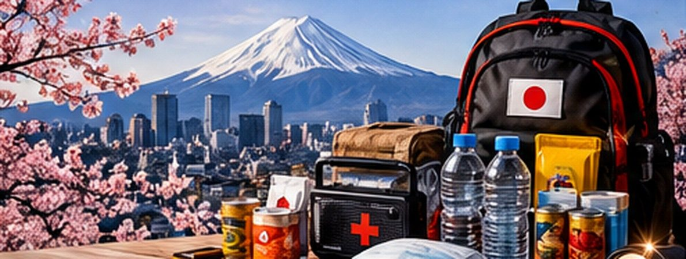

Japan’s Earthquake Planning Offers a Blueprint for Emergency Supplies
Frequent earthquake and typhoon risks make emergency supplies part of everyday planning in Japan.

Japan’s disaster-readiness recommendations reflect longstanding exposure to earthquakes, tsunamis, typhoons and infrastructure interruptions. Authorities and local communities routinely promote evacuation planning and household supplies.
What the guidance means
A plan should include secure furniture, evacuation routes, accessible shoes, portable lighting, water, ready-to-eat food and family communications. Apartment residents should consider what to do if elevators stop or water pressure is lost.
Important context
Japan’s example shows how routine preparation can become normal civic practice without implying that a specific disaster is forecast.
Official background: Government or agency guidance. This original TNS explainer distinguishes ongoing public preparedness advice from an active emergency.